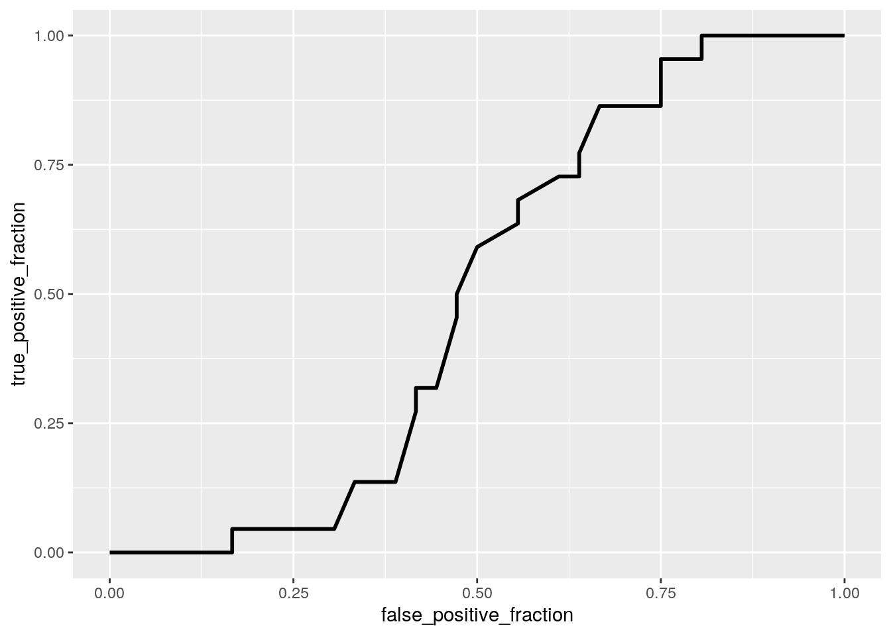
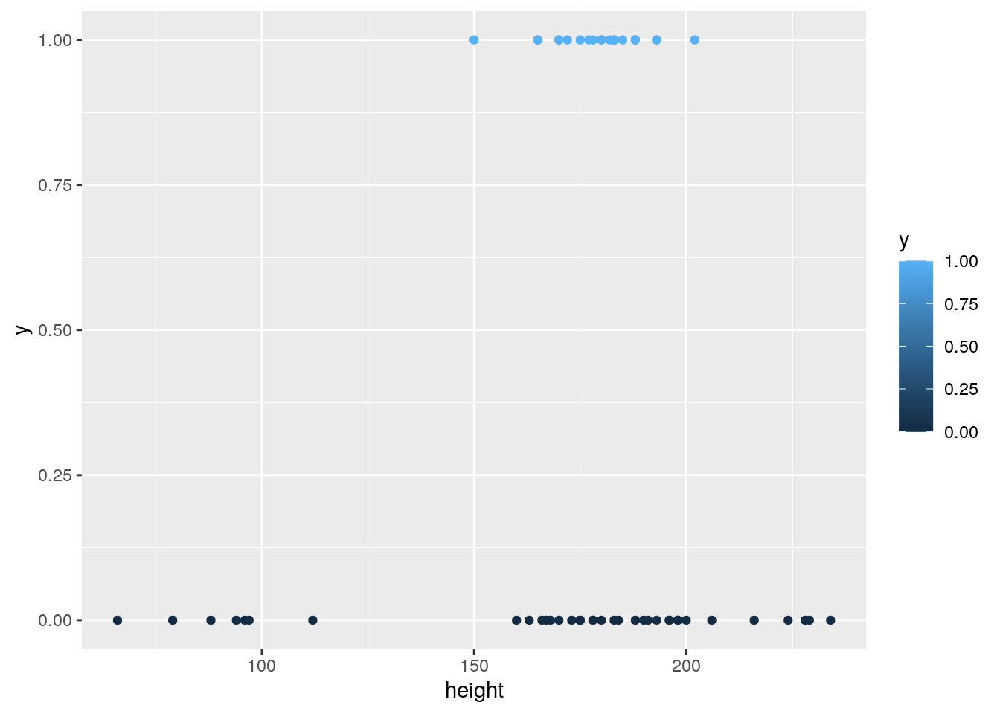
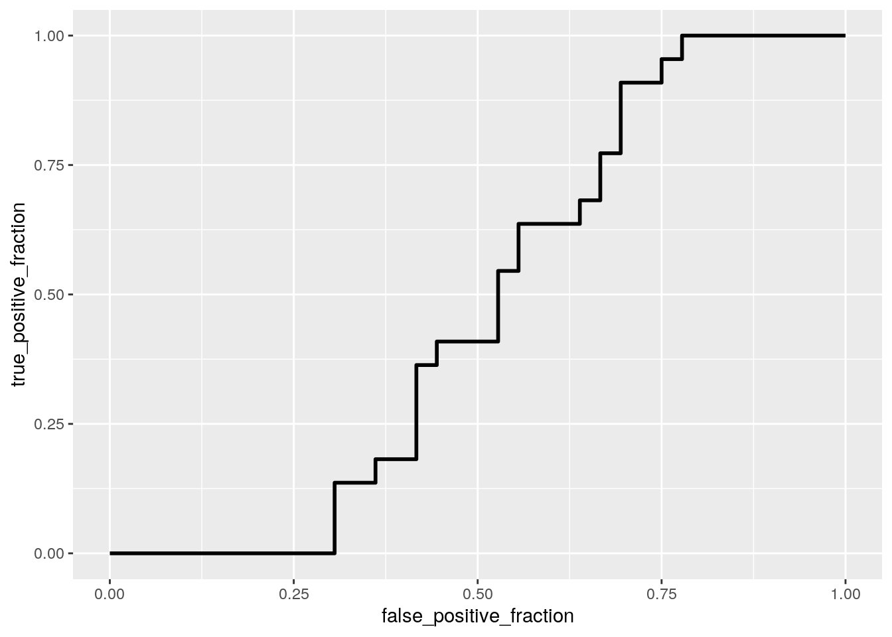
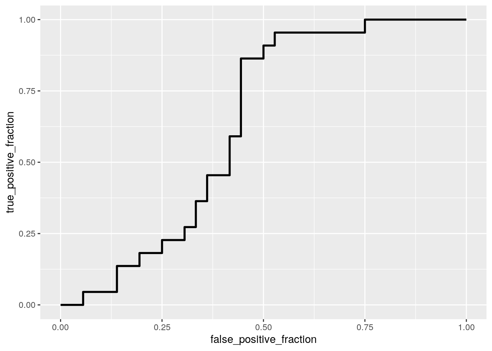
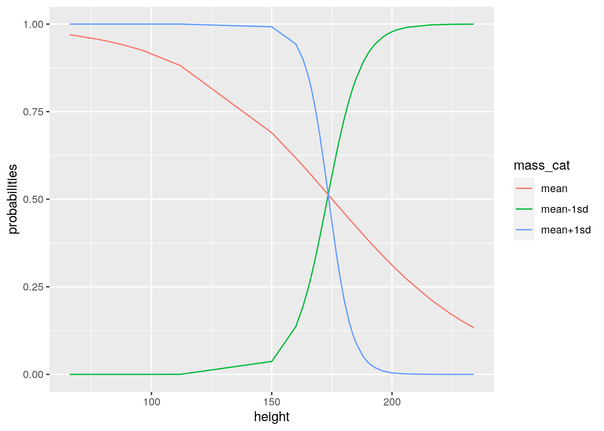

This homework is due Sunday Apr 25, 2021 at 11:59pm. Please submit as an HTML file on Canvas.
For all questions, include the R commands/functions that you used to find your answer. Answers without supporting code will not receive credit.
Review of how to submit this assignment All homework assignments will be completed using R Markdown. These
.Rmdfiles consist of text/syntax (formatted using Markdown) alongside embedded R code. When you have completed the assignment (by adding R code inside codeblocks and supporting text outside of the codeblocks), create your document as follows:
- Click the arrow next to the “Knit” button (above)
- Choose “Knit to HTML” and wait; fix any errors if applicable
- Go to Files pane and put checkmark next to the correct HTML file
- Click on the blue gear icon (“More”) and click Export
- Download the file and then upload to Canvas
We will analyze some data from a famous case of alleged gender discrimination in admission to graduate programs at UC Berkeley in 1973. The three variables are Admit (Admitted, Rejected), Gender (Male, Female), and Dept (Departments A, B, C, D, E, F). First, create a dichotomous outcome variable \(y\) that is 1 if Admit==“Admitted” and 0 otherwise.
Predict \(y\) from Gender using a logistic regression. Is the effect significant? Interpret the effect: what is the odds ratio for admission to graduate school for women compared to men? Compute the predicted probability of admission for women and for men.
library(tidyverse)
adm <- read_csv("http://www.nathanielwoodward.com/admissions.csv")
# your code here
adm <- adm %>% mutate(y = ifelse(Admit == "Admitted",
1, 0))
adm## # A tibble: 4,526 x 4
## Admit Gender Dept y
## <chr> <chr> <chr> <dbl>
## 1 Admitted Male A 1
## 2 Admitted Male A 1
## 3 Admitted Male A 1
## 4 Admitted Male A 1
## 5 Admitted Male A 1
## 6 Admitted Male A 1
## 7 Admitted Male A 1
## 8 Admitted Male A 1
## 9 Admitted Male A 1
## 10 Admitted Male A 1
## # … with 4,516 more rowsfit <- glm(y ~ Gender, data = adm, family = "binomial")
summary(fit)##
## Call:
## glm(formula = y ~ Gender, family = "binomial", data = adm)
##
## Deviance Residuals:
## Min 1Q Median 3Q Max
## -1.0855 -1.0855 -0.8506 1.2722 1.5442
##
## Coefficients:
## Estimate Std. Error z value Pr(>|z|)
## (Intercept) -0.83049 0.05077 -16.357 <2e-16 ***
## GenderMale 0.61035 0.06389 9.553 <2e-16 ***
## ---
## Signif. codes: 0 '***' 0.001 '**' 0.01 '*' 0.05 '.' 0.1 ' ' 1
##
## (Dispersion parameter for binomial family taken to be 1)
##
## Null deviance: 6044.3 on 4525 degrees of freedom
## Residual deviance: 5950.9 on 4524 degrees of freedom
## AIC: 5954.9
##
## Number of Fisher Scoring iterations: 4exp(coef(fit))## (Intercept) GenderMale
## 0.4358372 1.8410800odds2prob <- function(odds) {
odds/(1 + odds)
}
# probability for women
odds2prob(0.4358372)## [1] 0.3035422# probability for men
odds2prob(0.8024112)## [1] 0.4451876The effect is significant because p<0.05. The odds ratio for admission to graduate school for women compared to men is 0.61035. The predicted probability of admission for women is 0.304. The predicted probability of admission for men is 0.445.
Now predict \(y\) (admission) from Dept using a logistic regression. Interpret the overall pattern of results. For which departments are odds of admission higher than A? Which departments are the most selective? The least?
# your code here
fit2 <- glm(y ~ Dept, data = adm, family = "binomial")
summary(fit2)##
## Call:
## glm(formula = y ~ Dept, family = "binomial", data = adm)
##
## Deviance Residuals:
## Min 1Q Median 3Q Max
## -1.4376 -0.9295 -0.3649 0.9572 2.3419
##
## Coefficients:
## Estimate Std. Error z value Pr(>|z|)
## (Intercept) 0.59346 0.06838 8.679 <2e-16 ***
## DeptB -0.05059 0.10968 -0.461 0.645
## DeptC -1.20915 0.09726 -12.432 <2e-16 ***
## DeptD -1.25833 0.10152 -12.395 <2e-16 ***
## DeptE -1.68296 0.11733 -14.343 <2e-16 ***
## DeptF -3.26911 0.16707 -19.567 <2e-16 ***
## ---
## Signif. codes: 0 '***' 0.001 '**' 0.01 '*' 0.05 '.' 0.1 ' ' 1
##
## (Dispersion parameter for binomial family taken to be 1)
##
## Null deviance: 6044.3 on 4525 degrees of freedom
## Residual deviance: 5189.0 on 4520 degrees of freedom
## AIC: 5201
##
## Number of Fisher Scoring iterations: 5exp(coef(fit2))## (Intercept) DeptB DeptC DeptD DeptE DeptF
## 1.81024096 0.95066362 0.29845113 0.28412811 0.18582302 0.03804039The overall results show that all of the departments except for B have a significant effect. None of the other departments have a higher odds of admission than department A. The most selective departments are C,D,E, and F. The least selective are A and B.
Rerun the model from 1.2 but now add Gender as a predictor as well. Interpret the coefficient for Gender now (note there is no interaction, so the effect doesn’t depend on the level of Dept). Controlling for Department, is there a significant effect of Gender on admissions? What is the odds ratio? What can you say about departments A and B compared to the others (in terms of odds/probability of admission; relevel if need be)?
# your code here
fit3 <- glm(y ~ Dept + Gender, data = adm, family = "binomial")
summary(fit3)##
## Call:
## glm(formula = y ~ Dept + Gender, family = "binomial", data = adm)
##
## Deviance Residuals:
## Min 1Q Median 3Q Max
## -1.4773 -0.9306 -0.3741 0.9588 2.3613
##
## Coefficients:
## Estimate Std. Error z value Pr(>|z|)
## (Intercept) 0.68192 0.09911 6.880 5.97e-12 ***
## DeptB -0.04340 0.10984 -0.395 0.693
## DeptC -1.26260 0.10663 -11.841 < 2e-16 ***
## DeptD -1.29461 0.10582 -12.234 < 2e-16 ***
## DeptE -1.73931 0.12611 -13.792 < 2e-16 ***
## DeptF -3.30648 0.16998 -19.452 < 2e-16 ***
## GenderMale -0.09987 0.08085 -1.235 0.217
## ---
## Signif. codes: 0 '***' 0.001 '**' 0.01 '*' 0.05 '.' 0.1 ' ' 1
##
## (Dispersion parameter for binomial family taken to be 1)
##
## Null deviance: 6044.3 on 4525 degrees of freedom
## Residual deviance: 5187.5 on 4519 degrees of freedom
## AIC: 5201.5
##
## Number of Fisher Scoring iterations: 5exp(coef(fit3))## (Intercept) DeptB DeptC DeptD DeptE DeptF
## 1.97767415 0.95753028 0.28291804 0.27400567 0.17564230 0.03664494
## GenderMale
## 0.90495497Controlling for Department, there is not a significant effect of Gender on admissions? The odds ratio for a male in department A compared to a Female in department A is 0.905. The odds of admission for departments A and B are a lot greater than the other departments.
OK, now add the interaction of Gender and Dept to your model predicting \(y\) (admission), to get a fuller picture. Compute the odds ratio for admission (Male vs. Female) in each department (A through F). Which departments favor Male applicants (i.e., higher odds of admission for Males)?
# your code here
fit4 <- glm(y ~ Dept * Gender, data = adm, family = "binomial")
summary(fit4)##
## Call:
## glm(formula = y ~ Dept * Gender, family = "binomial", data = adm)
##
## Deviance Residuals:
## Min 1Q Median 3Q Max
## -1.8642 -0.9127 -0.3821 0.9768 2.3793
##
## Coefficients:
## Estimate Std. Error z value Pr(>|z|)
## (Intercept) 1.5442 0.2527 6.110 9.94e-10 ***
## DeptB -0.7904 0.4977 -1.588 0.11224
## DeptC -2.2046 0.2672 -8.252 < 2e-16 ***
## DeptD -2.1662 0.2750 -7.878 3.32e-15 ***
## DeptE -2.7013 0.2790 -9.682 < 2e-16 ***
## DeptF -4.1250 0.3297 -12.512 < 2e-16 ***
## GenderMale -1.0521 0.2627 -4.005 6.21e-05 ***
## DeptB:GenderMale 0.8321 0.5104 1.630 0.10306
## DeptC:GenderMale 1.1770 0.2996 3.929 8.53e-05 ***
## DeptD:GenderMale 0.9701 0.3026 3.206 0.00135 **
## DeptE:GenderMale 1.2523 0.3303 3.791 0.00015 ***
## DeptF:GenderMale 0.8632 0.4027 2.144 0.03206 *
## ---
## Signif. codes: 0 '***' 0.001 '**' 0.01 '*' 0.05 '.' 0.1 ' ' 1
##
## (Dispersion parameter for binomial family taken to be 1)
##
## Null deviance: 6044.3 on 4525 degrees of freedom
## Residual deviance: 5167.3 on 4514 degrees of freedom
## AIC: 5191.3
##
## Number of Fisher Scoring iterations: 5exp(coef(fit4))## (Intercept) DeptB DeptC DeptD
## 4.68421053 0.45365169 0.11029053 0.11461595
## DeptE DeptF GenderMale DeptB:GenderMale
## 0.06711510 0.01616276 0.34921205 2.29803272
## DeptC:GenderMale DeptD:GenderMale DeptE:GenderMale DeptF:GenderMale
## 3.24461787 2.63817862 3.49825046 2.37068781Departments C and E favor male applicants.
Take the admit dataset and, using dplyr functions, create a table with counts of applicants of each Gender in each Department (e.g., number of males who applied to department A) and also the percent of applicants admitted of each Gender in each Department. Sort descending by the count variable. In terms of selectivity, what kinds of departments did the majority of women apply to? What about the majority of men? Skim through the wikipedia article about Simpson’s paradox (https://en.wikipedia.org/wiki/Simpsons_paradox) to get a better idea of what is going on here!
# your code hereyour answer here
Load the starwars data (from the dplyr package). Select just the variables mass, height, and species (these three variables only), remove all of the NAs from these, and save the result as starwars1. Create a binary numeric variable \(y\), \(y=1\) if species is Human, \(y=0\) otherwise, and add it as a column in starwars1 (e.g., using mutate). Use this modified dataset (starwars1) for the remaining questions.
Predict the dichotomous Human indicator variable (y) that you just created from height using a logistic regression. Briefly interpret. Plot the ROC curve and compute the AUC (don’t worry: it should be terrible). Create a plot of the logistic regression showing predicted probability of being Human by height. Color points by predicted human vs predicted not.
# your code here
sw <- starwars %>% filter(!is.na(mass) & !is.na(height),
!is.na(species))
starwars1 <- sw %>% select(mass, height, species) %>%
mutate(y = ifelse(species == "Human", 1, 0))
fit5 <- glm(y ~ height, data = starwars1, family = "binomial")
summary(fit5)##
## Call:
## glm(formula = y ~ height, family = "binomial", data = starwars1)
##
## Deviance Residuals:
## Min 1Q Median 3Q Max
## -1.1594 -1.0118 -0.8654 1.3645 1.4793
##
## Coefficients:
## Estimate Std. Error z value Pr(>|z|)
## (Intercept) -1.836225 1.489913 -1.232 0.218
## height 0.007665 0.008284 0.925 0.355
##
## (Dispersion parameter for binomial family taken to be 1)
##
## Null deviance: 76.992 on 57 degrees of freedom
## Residual deviance: 76.075 on 56 degrees of freedom
## AIC: 80.075
##
## Number of Fisher Scoring iterations: 4exp(coef(fit5))## (Intercept) height
## 0.159418 1.007694probs <- predict(fit5, type = "response")
library(plotROC)
ROCplot <- ggplot(fit5) + geom_roc(aes(d = y, m = probs),
n.cuts = 0)
ROCplot
calc_auc(ROCplot)## PANEL group AUC
## 1 1 -1 0.4924242ggplot(fit5, aes(height, y)) + geom_point(aes(color = y))
For every one unit increase in height, the odds go up by 1.007694.
Predict the Human indicator variable (y) from height and mass (no interaction). Discuss the output briefly (you do not have to interpret any coefficients). Compute Accuracy, Sensitivity, and Specificity. Plot the ROC curve and compute the AUC (it should still be bad)
# your code here
fit6 <- glm(y ~ height + mass, data = starwars1, family = "binomial")
summary(fit6)##
## Call:
## glm(formula = y ~ height + mass, family = "binomial", data = starwars1)
##
## Deviance Residuals:
## Min 1Q Median 3Q Max
## -1.1694 -1.0233 -0.7864 1.3523 1.4588
##
## Coefficients:
## Estimate Std. Error z value Pr(>|z|)
## (Intercept) -1.865889 1.487544 -1.254 0.210
## height 0.008743 0.008493 1.029 0.303
## mass -0.001761 0.003180 -0.554 0.580
##
## (Dispersion parameter for binomial family taken to be 1)
##
## Null deviance: 76.992 on 57 degrees of freedom
## Residual deviance: 75.501 on 55 degrees of freedom
## AIC: 81.501
##
## Number of Fisher Scoring iterations: 5probs <- predict(fit6, type = "response")
table(predict = as.numeric(probs > 0.5), truth = starwars1$y) %>%
addmargins## truth
## predict 0 1 Sum
## 0 36 22 58
## Sum 36 22 58ROCplot <- ggplot(fit6) + geom_roc(aes(d = y, m = probs),
n.cuts = 0)
ROCplot
calc_auc(ROCplot)## PANEL group AUC
## 1 1 -1 0.469697The results of this regression show that nothing is significant.
Predict the Human indicator variable (y) from the interaction of height and mass. Be sure to center your variables first, and save them to the starwars1 dataset as mass_c and height_c. Discuss the output. Compute Accuracy, Sensitivity, and Specificity. Plot the ROC curve and calculate the AUC. Compare the AUC with that of the main-effects model in 2.2 (it should be a bit better).
# your code here
starwars1$mass_c <- (starwars1$mass - mean(starwars1$mass,
na.rm = T))
starwars1$height_c <- (starwars1$height - mean(starwars1$height,
na.rm = T))
fit7 <- glm(y ~ height_c * mass_c, data = starwars1,
family = "binomial")
summary(fit7)##
## Call:
## glm(formula = y ~ height_c * mass_c, family = "binomial", data = starwars1)
##
## Deviance Residuals:
## Min 1Q Median 3Q Max
## -1.3617 -1.1386 -0.3897 1.1926 2.0403
##
## Coefficients:
## Estimate Std. Error z value Pr(>|z|)
## (Intercept) 0.0372034 0.3484435 0.107 0.9150
## height_c -0.0318035 0.0227264 -1.399 0.1617
## mass_c -0.0004904 0.0024094 -0.204 0.8387
## height_c:mass_c -0.0010124 0.0005047 -2.006 0.0449 *
## ---
## Signif. codes: 0 '***' 0.001 '**' 0.01 '*' 0.05 '.' 0.1 ' ' 1
##
## (Dispersion parameter for binomial family taken to be 1)
##
## Null deviance: 76.992 on 57 degrees of freedom
## Residual deviance: 67.566 on 54 degrees of freedom
## AIC: 75.566
##
## Number of Fisher Scoring iterations: 6probs <- predict(fit7, type = "response")
table(predict = as.numeric(probs > 0.5), truth = starwars1$y) %>%
addmargins## truth
## predict 0 1 Sum
## 0 25 16 41
## 1 11 6 17
## Sum 36 22 58# Accuracy
(25 + 6)/58## [1] 0.5344828# Sensitivity
(6/22)## [1] 0.2727273# Specificity
(25/36)## [1] 0.6944444ROCplot <- ggplot(starwars1) + geom_roc(aes(d = y,
m = probs), n.cuts = 0)
ROCplot
calc_auc(ROCplot)## PANEL group AUC
## 1 1 -1 0.6287879The output shows that only the interaction between height and mass was significant. The AUC is 0.6288 which is higher than in the previous question.
We want to visualize the interaction, but it is continuous! We can get around this by setting mass_c to the mean (0) and plus/minus one standard deviation and then, for each of these three values, looking at the effect of height on the probability of being human. Below, in the code given, I take the dataset and I duplicate it three times: to one, I add a column with mass_c=0, to another, I add mass_c=sd(mass), and to the third I add mass_c=-sd(mass). Then, I stack them all on top of each other and add a label variable for each (mass_cat).
Use this new dataset and predict(your_model_from_2.3, newdata=starwars_new, type="response") to get predicted probabilities from your interaction model from 2.3, save the predicted probabilities in the dataset starwars_new, and then send this dataset to ggplot to plot those predicted probabilities (y-axis) against height (or height_c, on the x-axis) (use geom_line and set color=mass_cat). Interpret the interaction by describing what you see in the plot!
## Code to get you started on 2d
starwars_new <- bind_rows(mutate(starwars1, mass_c = 0),
mutate(starwars1, mass_c = sd(mass)), mutate(starwars1,
mass_c = -sd(mass)))
starwars_new <- starwars_new %>% mutate(mass_cat = c(rep("mean",
nrow(starwars1)), rep("mean+1sd", nrow(starwars1)),
rep("mean-1sd", nrow(starwars1))))
# your code here
starwars_new$probabilities <- predict(fit7, newdata = starwars_new,
type = "response")
starwars_new## # A tibble: 174 x 8
## mass height species y mass_c height_c mass_cat probabilities
## <dbl> <int> <chr> <dbl> <dbl> <dbl> <chr> <dbl>
## 1 77 172 Human 1 0 -1.95 mean 0.525
## 2 75 167 Droid 0 0 -6.95 mean 0.564
## 3 32 96 Droid 0 0 -77.9 mean 0.925
## 4 136 202 Human 1 0 28.1 mean 0.298
## 5 49 150 Human 1 0 -23.9 mean 0.690
## 6 120 178 Human 1 0 4.05 mean 0.477
## 7 75 165 Human 1 0 -8.95 mean 0.580
## 8 32 97 Droid 0 0 -76.9 mean 0.923
## 9 84 183 Human 1 0 9.05 mean 0.438
## 10 77 182 Human 1 0 8.05 mean 0.445
## # … with 164 more rowsggplot(starwars_new, aes(height, probabilities)) +
geom_line(aes(color = mass_cat))
The effect of height is positive for light characters, but negative for heavy characters.
## R version 3.6.1 (2019-07-05)
## Platform: x86_64-pc-linux-gnu (64-bit)
## Running under: Ubuntu 18.04.5 LTS
##
## Matrix products: default
## BLAS: /stor/system/opt/R/R-3.6.1/lib/R/lib/libRblas.so
## LAPACK: /stor/system/opt/R/R-3.6.1/lib/R/lib/libRlapack.so
##
## locale:
## [1] LC_CTYPE=en_US.UTF-8 LC_NUMERIC=C
## [3] LC_TIME=en_US.UTF-8 LC_COLLATE=en_US.UTF-8
## [5] LC_MONETARY=en_US.UTF-8 LC_MESSAGES=en_US.UTF-8
## [7] LC_PAPER=en_US.UTF-8 LC_NAME=C
## [9] LC_ADDRESS=C LC_TELEPHONE=C
## [11] LC_MEASUREMENT=en_US.UTF-8 LC_IDENTIFICATION=C
##
## attached base packages:
## [1] stats graphics grDevices utils datasets methods base
##
## other attached packages:
## [1] plotROC_2.2.1 forcats_0.5.0 stringr_1.4.0 dplyr_1.0.2
## [5] purrr_0.3.4 readr_1.4.0 tidyr_1.1.2 tibble_3.0.4
## [9] ggplot2_3.3.3 tidyverse_1.3.0
##
## loaded via a namespace (and not attached):
## [1] tidyselect_1.1.0 xfun_0.20 haven_2.3.1 colorspace_2.0-0
## [5] vctrs_0.3.6 generics_0.1.0 htmltools_0.5.0 yaml_2.2.1
## [9] utf8_1.1.4 rlang_0.4.10 pillar_1.4.7 glue_1.4.2
## [13] withr_2.3.0 DBI_1.1.0 dbplyr_2.0.0 modelr_0.1.8
## [17] readxl_1.3.1 plyr_1.8.6 lifecycle_0.2.0 munsell_0.5.0
## [21] blogdown_0.20 gtable_0.3.0 cellranger_1.1.0 rvest_0.3.6
## [25] evaluate_0.14 labeling_0.4.2 knitr_1.30 curl_4.3
## [29] fansi_0.4.1 broom_0.7.3 Rcpp_1.0.5 scales_1.1.1
## [33] backports_1.2.1 formatR_1.7 jsonlite_1.7.2 farver_2.0.3
## [37] fs_1.5.0 hms_0.5.3 digest_0.6.27 stringi_1.5.3
## [41] bookdown_0.21 grid_3.6.1 cli_2.2.0 tools_3.6.1
## [45] magrittr_2.0.1 crayon_1.3.4 pkgconfig_2.0.3 ellipsis_0.3.1
## [49] xml2_1.3.2 reprex_0.3.0 lubridate_1.7.9.2 assertthat_0.2.1
## [53] rmarkdown_2.6 httr_1.4.2 rstudioapi_0.13 R6_2.5.0
## [57] compiler_3.6.1## [1] "2021-05-09 19:05:03 CDT"## sysname
## "Linux"
## release
## "4.15.0-142-generic"
## version
## "#146-Ubuntu SMP Tue Apr 13 01:11:19 UTC 2021"
## nodename
## "educcomp02.ccbb.utexas.edu"
## machine
## "x86_64"
## login
## "unknown"
## user
## "md39585"
## effective_user
## "md39585"